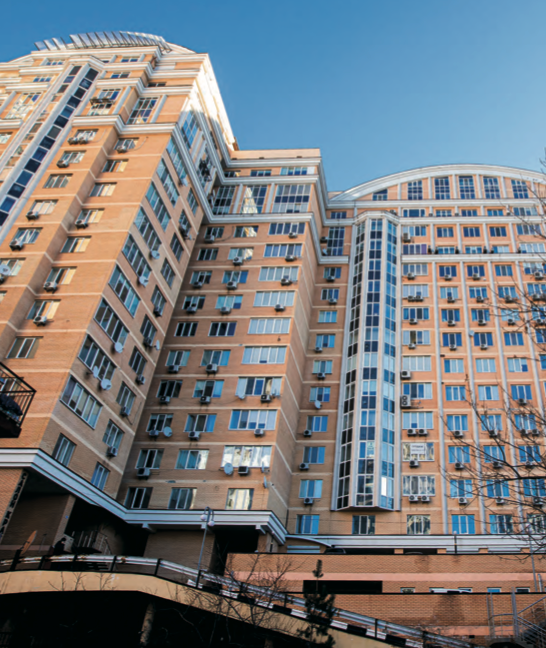
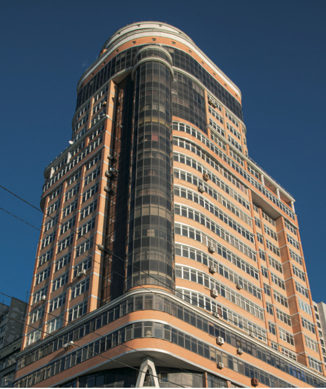
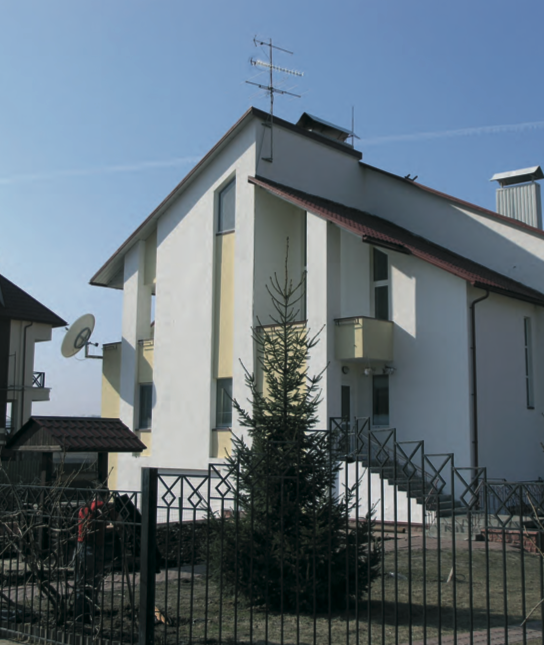

Генезіс
Переваги архітектурних об'ємів комплексу - функціональність та естетика. Для фасаду були обрані кольори, які найбільш вдало передають атмосферу стабільності і гармонії, стилю і затишку. Секції комплексу мають змінну поверховість. Це не просто красиво: перепади висоти створюють відчуття відкритого простору і свободи, а у квартири та двір проникає більше сонячного світла. У зеленому затишному дворі без автомобілів будуть облаштовані сучасні і безпечні дитячі майданчики. Внутрішній двір – це якісна продумана система для жителів будь-якого віку та інтересів. Відокремлений від вуличної метушні він має безпечну територію та внутрішню інфраструктуру.

ЖК IP1
Новобудова IP1- це малоповерхове житло ком- форт-класу висотою стелі від 3.1 до 3.4 метри. Зручне розташування на перетині двох головних транспортних магістралей, в пішій доступності від станції метро Шулявська дозволять швидко діста- тися до будь-якої точки в м. Київ. Будівля має фундамент у вигляді суцільної залізобе- тонної плити, що надає їй додаткової стабільності. При створенні цього проєкту ми надихались еле- гантними будинками нью-йоркського Вест-Віллідж та їхнім аристократичним шармом.

Гуртожиток НТУУ КПІ
Житловий простір для клубного формату життя. Сучасна архітектура, продумане планування, комфортне розташування та атмосфера приватності для тих, хто цінує стиль і спокій у межах міста.

В. Тютюнника, 5В
Затишні просторі апартаменти, дворівневі пентхауси в елітному будинку бізнес-класу в центральній частині Києва та , водночас, в потаємному тихому куточку міста потопаючому в зелені. Захоплюючий подих краєвид не залишить байдужим нікого. Елітна новобудова знаходиться всього за два кілометри від Хрещатика, і при цьому в стороні від великих завантажених автомагістралей. Зведений ЖК за новітніми європейськими стандартами, з екологічних матеріалів, що додатково дозволяє підвищити характеристики тепло- і звукоізоляції. У ході будівництва застосована монолітно-каркасна технологія.

Є.Коновальця, 31/11
Житловий комплекс, з вбудованими офісними приміщеннями. Стіни споруджені з якісного матеріалу з утепленням по технології «французська шуба». Фасад облицьовано лицьовою цеглою, що в поєднанні з сучасними алюмінієвими енергоощадними вікнами надають будівлі неповторного шарму та елегантності. Житловий комплекс, представлений широким різноманіттям квартир з декількома видами сучасних та зручних планувань та різним метражем, на верхніх поверхах розташовані пентхауси, які обов'язково сподобаються навіть найвибагливішим мешканцям. Панорамний вид на історичний центр Києва, що відкривається з вікон багатьох апартаментів, навряд залишить когось байдужим. Опалення приміщень індивідуальне і здійснюється від власної домової котельні. За рахунок складної геологічної ситуації, а саме високиму рівні грунтових вод та наявності підземних річок, у будівлі виконані надійні фундаменти з застосуванням буроін'єкційних паль довжиною 18-26м. ЖК має досить зручну транспортну розв'язку. Розташування будинку дозволяє дуже швидко дістатися до центру столиці, як на власному авто, так і на громадському транспорті.

ПАЛЛАДІУМ СІТІ
Знаходиться в діловому центрі столиці та відповідає класу «В». В будівлі буде комфортно знаходитись арендаторам та гостям, незалежно від їх бажання відвідати офіс чи зробити покупки. Ви можете не турбуватися про Ваше безпеку чи збереження будь-якого матеріального майна, наявність систем охорони та цілодобова робота співробітників дозволять Вам відчути себе під надійною охороною. Зручна транспортна розв’язка та наявність багатьох маршрутів громадського транспорту дозволять добиратися вам без заторів та проблем у будь-який час, до найближчої станції метро Либідська не більше 100м.

Котеджне містечко
Кожен шукає житло собі до душі - когось цілком влаштовує невелика квартира в багатоповерховому будинку галасливого міста, а хтось більше воліє вирватися з урбаністичної зони на природу, щоб поєднати комфортне проживання з приємним відпочинком. Котеджне містечко в с. Григорівка багате різноманітністю чудової природи, якою так і хочеться милуватися з вікна власного котеджу. Жити у власному будинку в оточенні природи, ростити дітей на свіжому повітрі та мати поруч усе необхідне родині – дитячий садок, школу, магазин – і, звісно ж, найкращих друзів по сусідству.